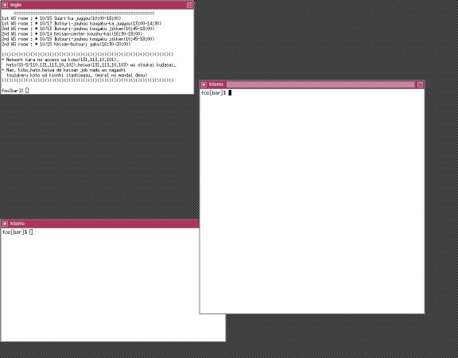
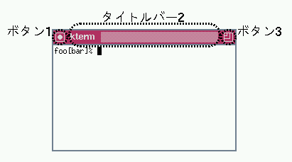
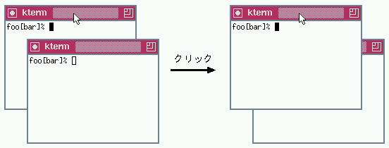
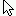
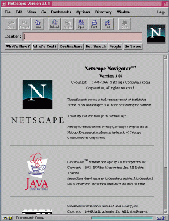
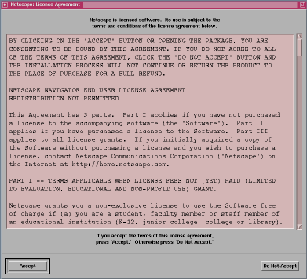

1. 作業を始めるまで
1.1. ワークステーションにログイン
次のようにアカウント名、パスワードを入力して、計算機センターのワークステーションにログインします。
login: アカウント名 EnterPassword: パスワード（入力した文字は表示されません）EnterここでEnter はEnterと表記された改行キーを意味します。以降の説明でも同様です。
正常にログインすると次のように表示されて、最後にシェルのプロンプト「%」が表示されます。プロンプトが出ているときだけ、シェルは自分のコマンドを受け付けます。プロンプトの直前に表示される「foo」、「bar」はそれぞれ、実際にはそのときの「あなたのアカウント名」、「ログインしたワークステーションの名前」になります。
. . . ()()()()()()()()()()()()()()()()()()()()()()()()()()()()()()()()()()()() + Network kara no access wa kibo(131.113.10.101), hato(SS-5/110,131.113.10.102),heiwa(131.113.10.103) wo otsukai kudasai. + Nao, kibo,hato,heiwa de keisan job nado wo nagashi tsuzukeru koto wa kinshi itashimasu. (moral no mondai desu) ()()()()()()()()()()()()()()()()()()()()()()()()()()()()()()()()()()()() foo[bar]%
これらの出力メッセージの構成は、ここの計算機センターに特有のものであり、異なるサイト（他の計算機センターやどこかの研究室の計算機）では違う内容が表示されるかもしれません。
1.2. ウィンドウシステムの起動
このままコンソール画面で作業することもできますが、Xというウィンドウシステムを起動して作業する方がなにかと便利です。次のように入力して、Xを起動します。
foo[bar]% xinit Enter
Xが起動すると、次のような画面になります。

loginというタイトルのウィンドウが1つと、ktermというタイトルのウィンドウが2つ現れます。同時にウィンドウマネージャ（後で説明します）が背後で動いています。これらの起動直後の画面の構成はサイト特有のものです。
1.3. ウィンドウマネージャの操作
3つのウィンドウとは別に、ウィンドウマネージャと呼ばれるものが動作しています。ここの計算機センターでは、twmという種類のウィンドウマネージャが起動しています。ウィンドウマネージャは、直接的に見えませんが、各ウィンドウへの装飾、ボタンの配置やポップアップメニューなどで、その姿を示しています。
初期設定でのtwmによるウィンドウの装飾を、次のktermのウィンドウを例にとって説明します。

1.3.1. アイコン化
ボタン1は、そのウィンドウをアイコン化するボタンです。このボタンの上でマウスのボタンをクリックすると、そのウィンドウがアイコン化されます。アイコン化されたウィンドウは、標準でのように表示されます（ただし、そのウィンドウが独自のパターンを用意している場合は、そのパターンが表示されます）。
アイコン化されたウィンドウをドラッグ（そのアイコン化されたウィンドウの上でマウスのボタンを押し、そのままマウスを動かして、適当なところでマウスのボタンを離す動作）すれば、その位置を変更できます。アイコン化されたウィンドウを元に戻すには、アイコンの上でマウスのボタンをクリックします。
1.3.2. 移動と持ち上げ
次のようにタイトルバー2をクリックすると、ウィンドウが画面の一番手前にきます。
またタイトルバー2をドラッグすると、ウィンドウの位置を変更することができます。
1.3.3. サイズの変更
ボタン3をドラッグするとウィンドウのサイズを変更する事ができます。
1.3.4. ウィンドウへの入力
特定のウィンドウへ入力するには、マウスを動かしてポインタ（

）を操作したいウィンドウの上に置きます（注意: WindowsやMacOSなど、他のウィンドウシステムでは操作したいウィンドウの上でマウスのボタンをクリックする必要がありますが、twmでは単に置くだけです）。この状態を「ウィンドウにフォーカスがある」と表現します。ウィンドウにフォーカスがあると、そのウィンドウの枠の装飾が（微妙に）変化します。また、特にktermなどでは、フォーカスがある場合はカーソルが黒く塗りつぶされたになり、ない場合は白抜きのになります。
ウィンドウにフォーカスがあるときに限り、キーボードの入力がそのウィンドウに伝わります。何かウィンドウに入力するときには、そのウィンドウにポインタを移動させる必要があります。
1.4. WWWでこのマニュアルを表示する
1.4.1. Netscapeの起動
2つのうちどららかのktermのウィンドウにポインタをおき、フォーカスをおいてみます。フォーカスがあることを確認したら、WWWブラウザであるNetscapeを次のように起動します。
foo[bar]% jnetscape & Enter
もし最後の&を付けずにEnter を入力した場合は、そのktermにフォーカスがある状態で、Control-zを入力（Ctrlと表記されたキーを押しながらzを押す）します。すると次のようにシェルのプロンプトが表示されます。
^ZSuspendedfoo[bar]% そこでさらに続けて次のように入力してください。
foo[bar]% bg Enter
どちらにしても、ウィンドウマネージャが次のような枠を表示して、どこにNetscapeを配置するか聞いてくるので、適当な場所にマウスで移動させ、クリックして決定します。

決定すると、次のようにNetscapeが起動します。

ここで、もし次のようなウィンドウが現れたら、「Accept」の領域をクリックしてください。（初めてNetscapeを起動した場合はライセンスについて承諾するように要求されます。）

1.4.2. URLの入力
Netscapeの「Locationフィールド」に、次のようにこのマニュアルのURLを入力します。
http://sanchi.appi.keio.ac.jp/mc Enter
これでこのマニュアルのトップページが表示されます。